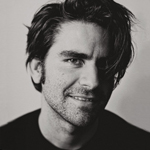

“”
Koh brings a designer's eye and aesthetic to a broad range of projects. In my interaction with him as professor and mentor, he's brought playfulness to computer games, useful affordances and UI/UX tweaks to webapps, and energy, movement, light, and color to what otherwise would have been mundane short films. Enthusiastic about design in many silos but not yet wed to any one thing in particular, he has been an asset to any project fortunate enough to draw his interest.

“”
Koh just makes the experience of working better. It's always a challenge and the freshness of his ideas really transforms projects into a very intellectually stimulating environment. He consistently comes up with ideas and designs that the team is obsessively awed by for weeks.
Dear BCG Digital Ventures,
As a strategic designer, your responsibilities will be:
Strategy and research
Conduct quantitative research investigations that help strategically frame, validate or challenge other forms of research - Develop ethnographic research and contextual design investigations to understand customer behaviors, pain points, needs and aspirations
- Initiate future-visioning investigations through deep trend analysis and scenario planning, allowing for the design of new experience models and capability sets
- Identify insights from customer research and market analysis
- Bring your research to life through personas, customer journeys, insight-opportunity frameworks, system maps, stories and scenarios
Collaborative design and development
- Design and facilitate immersion sessions with multi-disciplinary client teams
Using divergent design thinking techniques for the conceptual development of products, services and/or physical connected form-factors - Converge innovative ideas to a set of digital and tangible products, services and/or physical connected form-factors in partnership with venture architects, product managers and engineering
- Communicate design ideas using techniques, including product concepts, service models, customer journeys, industrial designs, system maps and/or infographics
- Iteratively design, test and refine disruptive products and services
Collaborate with multi-disciplinary teams to ensure that product development and delivery is consistent with strategic and consumer insights.
Commercialization
- Align with technologists and business stakeholders to understand business and operating models, as well as the systems and capabilities needed to deliver products and services
- Contribute to the sizing of value opportunities and the creation of value cases
- Partner with venture architects and product managers to ensure that new ventures and business builds are set up to deliver strategic value in line with design intent
Practice development
- Contribute to the evolution of strategic design approaches throughout BCG Digital Ventures
- Contribute to business development, as well as the planning and scoping of innovation and design projects
- Communicate insights, concepts and design rationales to internal and external audiences
- Create intellectual property and points of view, as well as industry and topic platforms
- Contribute to the development of thought leadership across a range of emerging business, technology and design topics
As a strategic designer, you will need:
- Bachelor’s degree in design, business, psychology, strategy, marketing or another relevant field
- Postgraduate qualification or significant experience in a relevant industry
An outstanding portfolio of work demonstrating strong human-centered design capabilities across a diverse range of projects - Experience with ethnographic research (quantitative and qualitative), divergent exploration, conceptual development and industrial design
A background with product prototyping and testing, future visioning and strategy development
Koh Terai
Dr. Alexis Gambis
Executive Director at Imagine Science Films
Professor/Collaborator/Mentor

“”
Koh combines both the creative palette and the technical virtuosity, bridging the arts and the sciences with dexterity, ingenuity and open-mindednesss. One of his particular strengths is his ability to focus on the narrative process in projects he takes part in. He is very selective, humble and honest about what he can undertake. This makes him a wonderful and invaluable team player.
“”
Every project I've worked with Koh, he has managed to suggest solutions to problems I didn't even realize existed. Even outside work Koh enjoys solving mental questions such as "How can MoMA have a better "coat check-in" experience?" or "How can a company better design its booth in a career fair to maximise efficiency and attendee satisfaction?" To him everything in life is a design puzzle awaiting to be solved.

“”
Koh can conduct quantitate analysis expeditiously and accurately with explicit guidance and help executing specific secondary research tasks. He has the high comprehension, prioritized and executed tasks efficiently and effectively, sought guidance when required, and responded positively to it. He has interpersonal skills to communicate with project members smoothly, i.e. straightforward, open mindedness and respectful interaction. [We] would like to work with him again soon.